Adding, Updating & Removing Data in Pandas
Master the art of modifying DataFrames safely: learn to add calculated columns, update values conditionally with .loc and .at, standardize labels, concatenate new rows, and prune unwanted columns and rows with drop().
1. Introduction: Your Dataset is Not Always Final
Real-world data science mein kabhi bhi aisa nahi hota ki aapko jo dataset mila, woh 100% final aur ready-to-use ho. Data is always living and evolving.
Imagine kijiye ek College Administration ya University Examination Cell ka scenario:
- New admissions hote hain, toh naye student records table mein judte hain (Adding).
- Exam cell papers re-evaluate karta hai, attendance percentage revise hoti hai, ya fees discount lagti hai (Updating).
- Inconsistent department codes (jaise
CSE,CSE-AI) ko standard formatCSmein badalna hota hai (Standardizing). - Temporary test entries, dummy records ya withdrawn students ko master table se hatana padta hai (Removing).
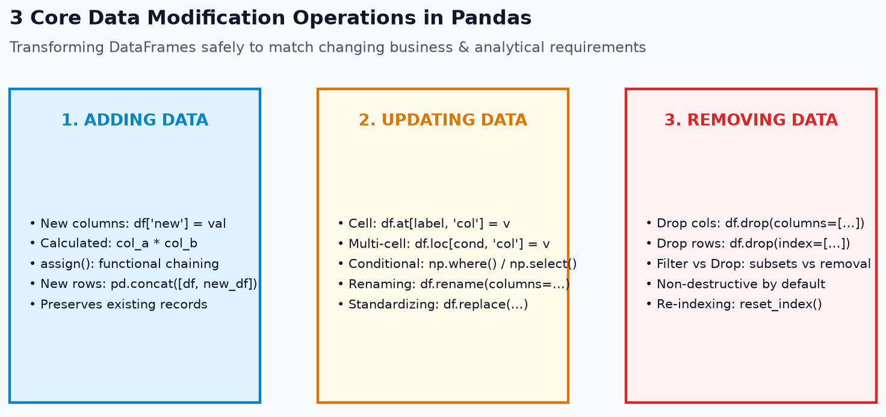
Pandas DataFrame sirf ek read-only spreadsheet nahi hai jise aap screen par inspect karein. DataFrame ek powerful, mutable tabular data structure hai jise aap programmatic precision ke sath restructure, enhance aur sanitize kar sakte hain.
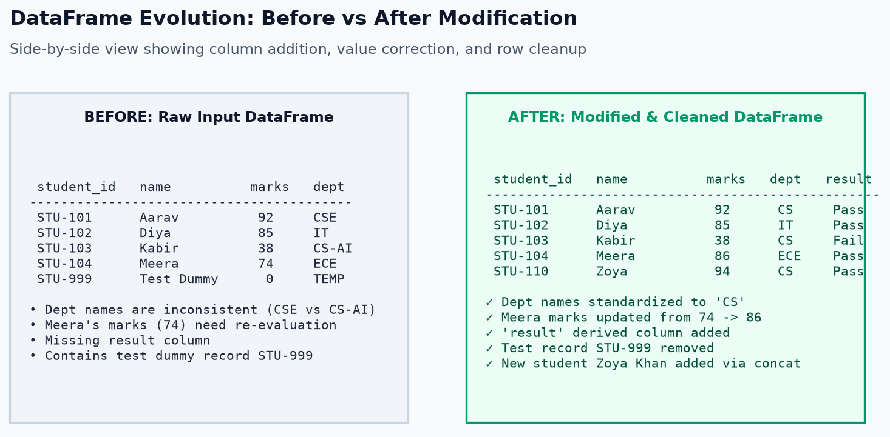
Machine Learning models raw messy data par train nahi hote. Features engineer karna (jaise derived revenue, pass/fail flags, total compensation), labels standardize karna, aur corrupted records purge karna 80% data preparation work hota hai. Agar aapne data galat tareeqe se mutate kar diya (e.g. chained assignment trap ya duplicate indexes), toh downstream predictive models completely distort ho sakte hain.
The Synthetic Baseline Dataset
Is topic ke agle sections mein concepts ko crystal clear rakhne ke liye hum ek consistent college examination dataset use karenge:
| student_id | student_name | department | marks | attendance |
|---|---|---|---|---|
STU-101 | Aarav Sharma | CSE | 92.0 | 88.0% |
STU-102 | Diya Patel | IT | 85.0 | 94.0% |
STU-103 | Kabir Singh | CS-AI | 38.0 | 82.0% |
STU-104 | Meera Nair | ECE | 74.0 | 70.0% |
STU-105 | Rohan Verma | CSE | 91.0 | 96.0% |
2. Adding a New Column to a DataFrame
Pandas mein naye columns add karna bohot common aur intuitive hai. Column addition ke kai tareeqe hote hain, depending on whether aap constant value assign kar rahe hain, koi Python list pass kar rahe hain, ya doosre columns se calculate kar rahe hain.
1. Adding a Column with a Constant Value
Jab aap ek scalar value (jaise number ya string) kisi naye column name ko assign karte hain, Pandas us scalar ko pure table ki har row par broadcast kar deta hai:
import pandas as pd df = pd.DataFrame({ 'student_id': ['STU-101', 'STU-102', 'STU-103'], 'name': ['Aarav', 'Diya', 'Kabir'] }) # Assigning a single scalar broadcasts across all rows df['semester'] = 4 df['institution'] = 'Delhi Technical University' print(df)
2. Creating a Column from a List or Series (The Length Alignment Rule)
Agar aap Python list se column add karte hain, toh ek strict rule yaad rakhiye: List ki length bilkul DataFrame ki row count ke barabar honi chahiye! Agar length match nahi hui, toh Pandas ValueError: Length of values does not match length of index throw karega.
Lekin agar aap Pandas Series pass karte hain, toh Pandas length ke bajaye Index Labels se align karta hai. Agar koi index match nahi hota, toh Pandas us row mein NaN fill kar deta hai without throwing an error!
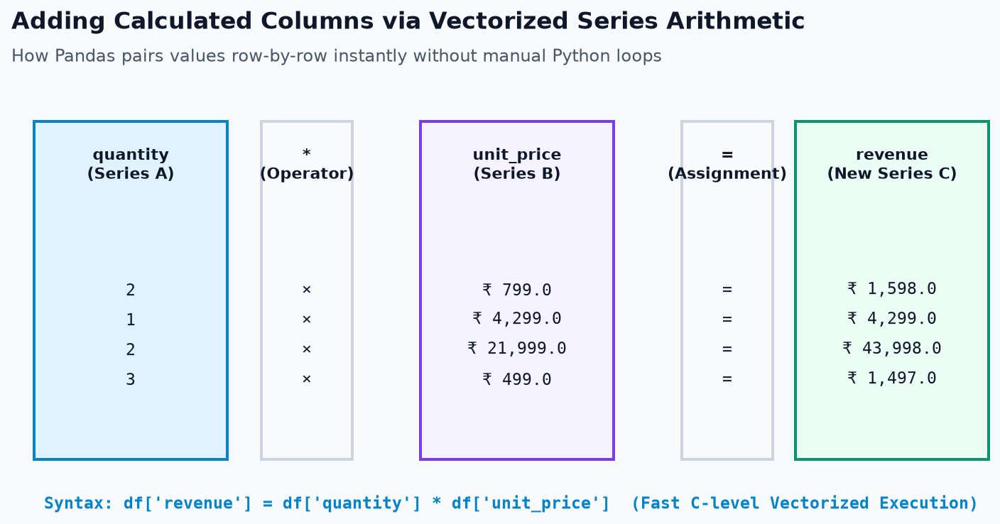
Example 1: Student Result Status
Is example mein hum students ke marks ke basis par ek naya result column add karenge. Agar marks ≥ 40 hain toh student 'Pass' hai, warna 'Fail'.
import numpy as np import pandas as pd df_students = pd.DataFrame({ 'student_id': ['STU-101', 'STU-102', 'STU-103', 'STU-104', 'STU-105'], 'student_name': ['Aarav Sharma', 'Diya Patel', 'Kabir Singh', 'Meera Nair', 'Rohan Verma'], 'marks': [92.0, 85.0, 38.0, 74.0, 91.0] }) # Adding a derived column using vectorized np.where df_students['result'] = np.where(df_students['marks'] >= 40.0, 'Pass', 'Fail') print(df_students)
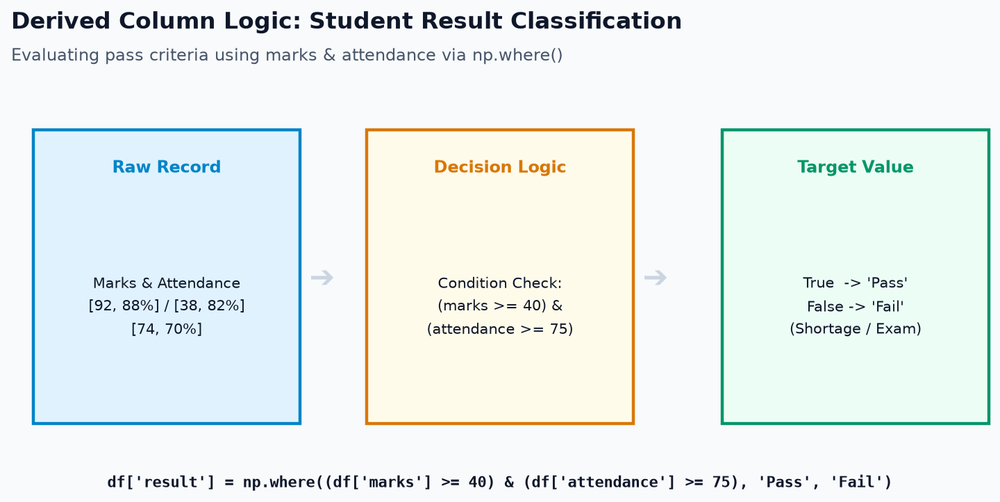
Example 2: E-Commerce Order Revenue
Online retail transactions mein order table mein quantity aur unit_price hoti hai. Har row ka revenue calculate karke business reports banayi jaati hain:
import pandas as pd df_orders = pd.DataFrame({ 'order_id': ['ORD-501', 'ORD-502', 'ORD-503', 'ORD-504'], 'product': ['Wireless Mouse', 'Mechanical Keyboard', '4K Monitor', 'USB-C Cable'], 'quantity': [2, 1, 2, 3], 'unit_price': [799.0, 4299.0, 21999.0, 499.0] }) # Vectorized multiplication of two columns df_orders['revenue'] = df_orders['quantity'] * df_orders['unit_price'] print(df_orders)
3. Creating Calculated Columns
Data analytics ka core kaam existing raw columns par mathematical aur logical transformations lagakar naye, insightful metrics generate karna hota hai.
Vectorization vs Slow Python For-Loops
Beginners aksar Python list comprehension ya for i in range(len(df)): use karne ki koshish karte hain naye columns banane ke liye. Yeh ek major anti-pattern hai!
Jab aap df['col_a'] * df['col_b'] likhte hain, Pandas background mein highly optimized C-compiled NumPy arrays call karta hai. Yeh manual Python loop ke mukable 50x se 100x tez hota hai aur code bhi concise aur readable banta hai.
Example 1: Calculating Student Exam Percentage
Har student ka marks obtained aur maximum possible total marks diya gaya hai. Hum simple Series division aur scalar multiplication se percentage nikalte hain:
import pandas as pd df_exam = pd.DataFrame({ 'student_name': ['Aarav', 'Diya', 'Kabir', 'Meera'], 'marks_obtained': [460, 485, 390, 420], 'total_marks': [500, 500, 500, 500] }) # Vectorized formula: (obtained / total) * 100 df_exam['percentage'] = (df_exam['marks_obtained'] / df_exam['total_marks']) * 100.0 print(df_exam)
Example 2: Employee Total Compensation Report
Corporate payroll mein ek employee ki total net take-home compensation alag-alag components se milkar banti hai: base_salary + bonus - tax_deduction.
import pandas as pd df_emp = pd.DataFrame({ 'emp_id': ['EMP-01', 'EMP-02', 'EMP-03'], 'name': ['Ananya', 'Vikram', 'Pooja'], 'base_salary': [75000.0, 90000.0, 65000.0], 'bonus': [12000.0, 15000.0, 8000.0], 'tax_deduction': [8500.0, 11000.0, 7000.0] }) # Multi-column linear equation df_emp['total_comp'] = df_emp['base_salary'] + df_emp['bonus'] - df_emp['tax_deduction'] print(df_emp[['emp_id', 'name', 'total_comp']])
4. Updating Individual Cells & Columns (.loc vs .at)
Data entry errors ko correct karne ke liye hume pure table ko modify karne ke bajaye kisi particular cell ya targeted rows ko update karna hota hai. Pandas iske liye do primary accessors deta hai: .loc[] aur .at[].
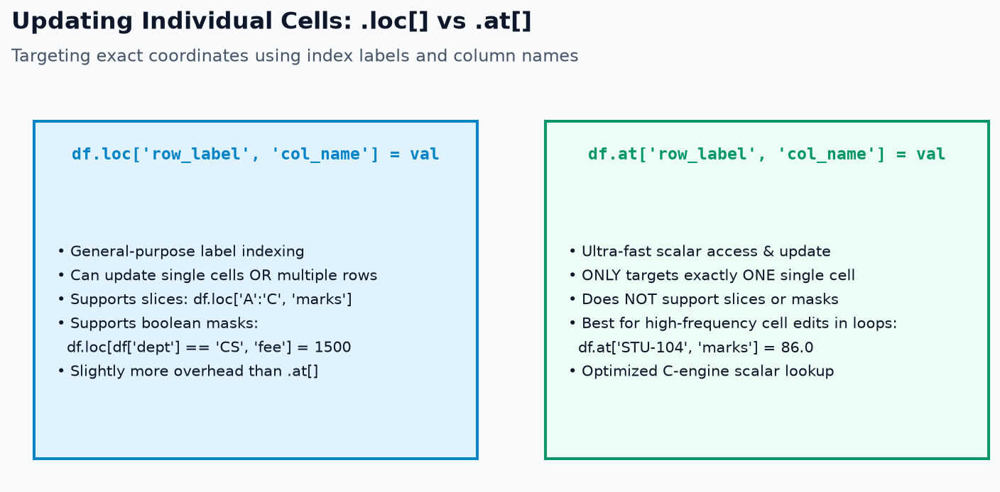
Key Differences: When to Use .loc vs .at
| Feature / Capability | .loc[row_label, col_name] |
.at[row_label, col_name] |
|---|---|---|
| Primary Purpose | General 2D label-based slicing & assignment | Extremely fast single scalar cell access |
| Can update multiple cells? | Yes (ranges, lists, boolean masks) | No (strictly exactly 1 scalar cell) |
| Lookup Overhead | Higher (checks types, shapes, dimensions) | Zero overhead (direct pointer in C engine) |
| Best Practice Scenario | Bulk updates & conditional assignments | Targeted corrections & high-speed loops |
Example 1: Correcting Student Marks After Re-Evaluation
Kabir Singh (STU-103) ne re-checking ke liye apply kiya aur unke marks 38 se badhkar 65 ho gaye. Hum .at[] se unhe update karte hain, jabki Meera Nair (STU-104) ke marks .loc[] se update karte hain:
import pandas as pd df_stu = pd.DataFrame({ 'student_name': ['Aarav', 'Diya', 'Kabir', 'Meera'], 'marks': [92, 85, 38, 74], 'department': ['CS', 'IT', 'CS', 'ECE'] }, index=['STU-101', 'STU-102', 'STU-103', 'STU-104']) # 1. Update Kabir's marks using .at df_stu.at['STU-103', 'marks'] = 65 # 2. Update Meera's marks using .loc df_stu.loc['STU-104', 'marks'] = 80 # 3. Bulk update: CS department students get special lab fee of 1500 df_stu['lab_fee'] = 1000 # default df_stu.loc[df_stu['department'] == 'CS', 'lab_fee'] = 1500 print(df_stu)
Example 2: Updating E-Commerce Product Price
Wireless Mouse (PROD-102) par ₹100 ka festival discount lagaya gaya, jisse uski price ₹899 se ghat kar ₹799 ho gayi:
import pandas as pd df_catalog = pd.DataFrame({ 'name': ['Keyboard', 'Mouse', 'Monitor'], 'price': [4299.0, 899.0, 21999.0] }, index=['PROD-101', 'PROD-102', 'PROD-103']) # Precise scalar update via .at df_catalog.at['PROD-102', 'price'] = 799.0 print("Updated PROD-102 price:", df_catalog.at['PROD-102', 'price'])
5. Updating Values Conditionally
Real datasets mein single values ke alawa pure table par conditional business logic apply karni hoti hai. Jaise: "Agar inventory quantity 0 hai toh status 'Out of Stock' mark karo, agar 10 se kam hai toh 'Low Stock', warna 'In Stock'."
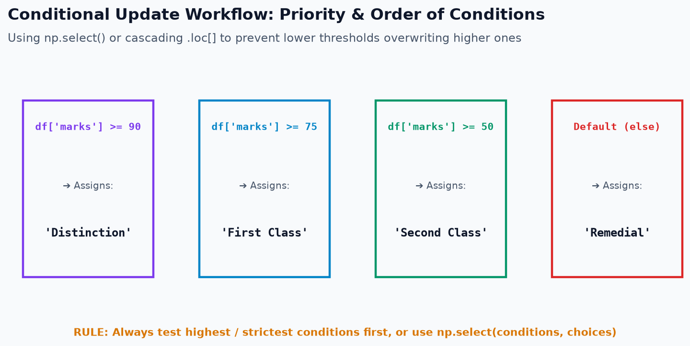
The Danger of Overwriting Conditional Rules
Jab beginners multiple conditions ke sath df.loc[condition, 'col'] = value likhte hain, toh order of execution bohot critical hota hai!
Agar aapne pehle df.loc[df['marks'] >= 50, 'grade'] = 'Second Class' likh diya, aur baad mein df.loc[df['marks'] >= 90, 'grade'] = 'Distinction' likha, toh 90+ marks wale bachhe pehle 'Second Class' mein assign honge aur baad mein overwrite honge. Lekin agar aapne ulta kar diya (pehle 90+ check kiya, fir ≥ 50 check kiya bina range restriction ke), toh 95 marks wale student ko ≥ 50 wali condition overwrite karke 'Second Class' bana degi!
Aise multi-tier scenarios ke liye np.select(condlist, choicelist, default=...) sabse clean, readable aur safe tareeqa hai. Yeh SQL ke CASE WHEN ... THEN ... ELSE ki tarah kaam karta hai aur pehle matching condition par stop kar leta hai.
Example 1: Student Academic Performance Categories
Hum students ko marks ke hisaab se categories mein divide karte hain:
- Distinction: Marks ≥ 90
- First Class: Marks ≥ 75 and < 90
- Second Class: Marks ≥ 50 and < 75
- Needs Improvement: Marks < 50
import numpy as np import pandas as pd df_perf = pd.DataFrame({ 'name': ['Aarav', 'Diya', 'Kabir', 'Meera', 'Rohan'], 'marks': [94, 82, 68, 45, 91] }) # Priority-ordered conditions list conditions = [ df_perf['marks'] >= 90, df_perf['marks'] >= 75, df_perf['marks'] >= 50 ] choices = ['Distinction', 'First Class', 'Second Class'] df_perf['performance'] = np.select(conditions, choices, default='Needs Improvement') print(df_perf)
Example 2: Retail Inventory Re-ordering Status
Warehouse management system mein stock levels ke hisaab se automated flags generate karna:
import numpy as np import pandas as pd df_inv = pd.DataFrame({ 'product': ['Keyboard', 'Webcam', 'Microphone', 'Mousepad'], 'quantity': [0, 4, 25, 8] }) inv_conditions = [ df_inv['quantity'] == 0, df_inv['quantity'] < 10 ] inv_choices = ['Out of Stock', 'Low Stock'] df_inv['status'] = np.select(inv_conditions, inv_choices, default='In Stock') print(df_inv)
6. Renaming Columns & Index Labels
Real-world datasets aksar cryptic, non-intuitive ya inconsistent column headers ke sath aate hain (jaise stu_nm, scr_final, dt_rec). Readable analysis aur team collaboration ke liye hume in headers ko clean snake_case ya formal report headings mein rename karna hota hai.
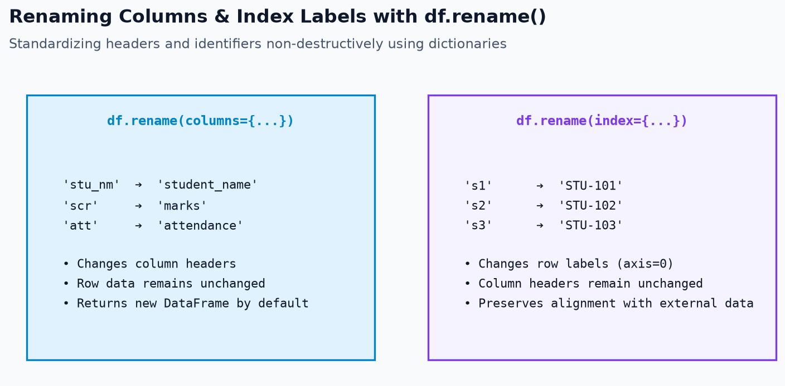
Renaming Headers vs Changing Data Values
Students ke beech ek bohot common confusion hota hai: "Kya rename() se cell values badalti hain?"
Bilkul nahi! rename() sirf table ke metadata labels (column headers ya row index identifiers) ko change karta hai. Table ke andar ke data cells bilkul untouched rehte hain.
Pandas mein df.rename(...) by default ek naya DataFrame return karta hai. Original DataFrame change nahi hota jab tak aap result ko reassign na karein (df = df.rename(...)) ya inplace=True pass na karein.
Example 1: Renaming Student Headers for Clean Reporting
Inconsistent abbreviations ko clear, human-readable column titles mein convert karna:
import pandas as pd df_raw = pd.DataFrame({ 'stu_nm': ['Aarav', 'Diya', 'Kabir'], 'scr': [92, 85, 65], 'dpt': ['CS', 'IT', 'CS'] }) # Mapping dictionary for multiple columns column_mapping = { 'stu_nm': 'student_name', 'scr': 'marks', 'dpt': 'department' } df_clean = df_raw.rename(columns=column_mapping) print("Cleaned Columns:", list(df_clean.columns)) print(df_clean)
Example 2: Renaming Custom Index Labels
Columns ke sath-sath aap row identifiers (Index) ko bhi index=... argument se rename kar sakte hain:
import pandas as pd df_items = pd.DataFrame({ 'item': ['Mouse', 'Keyboard'], 'price': [799.0, 4299.0] }, index=['s1', 's2']) # Renaming row labels simultaneously with column headers df_updated = df_items.rename( columns={'item': 'product_name', 'price': 'unit_price'}, index={'s1': 'SKU-101', 's2': 'SKU-102'} ) print(df_updated)
7. Replacing Values using replace()
rename() jahan column headers ko badalta hai, wahin replace() actual data cells ke andar ke values ko find & replace karta hai. Yeh categorical data ko standardize aur clean karne ka sabse powerful tool hai.
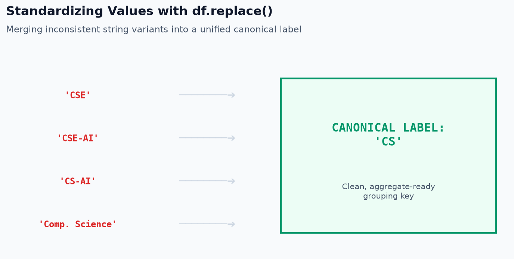
Why Data Standardization Matters
Agar aapke student dataset mein koi clerk CSE likhta hai, koi CSE-AI, koi CS - AI, aur koi Comp. Science, toh jab aap aage chalkar df.groupby('department').mean() karenge, toh Pandas in sabko alag-alag departments maan kar split kar dega!
Isliye grouping aur reporting se pehle hume mapping dictionary ke sath replace() use karke in sabko canonical 'CS' label mein lana hota hai.
Example 1: Standardizing Department Labels
Department labels ko standardize karne ka complete runnable example:
import pandas as pd df_dept = pd.DataFrame({ 'student': ['Aarav', 'Diya', 'Kabir', 'Meera', 'Rohan'], 'dept': ['CSE-AI', 'CSE AI', 'CS - AI', 'ECE-VLSI', 'CS'] }) # Canonical mapping dictionary dept_map = { 'CSE-AI': 'CS-AI', 'CSE AI': 'CS-AI', 'CS - AI': 'CS-AI', 'ECE-VLSI': 'ECE' } # Replace only in 'dept' column df_dept['dept_clean'] = df_dept['dept'].replace(dept_map) print(df_dept[['student', 'dept', 'dept_clean']])
Example 2: Cleaning Messy Inventory Status Labels
E-commerce warehouse inventory mein alag-alag vendors alag status strings bhejte hain jinka matlab ek hi hota hai:
import pandas as pd df_status = pd.DataFrame({ 'item': ['Monitor', 'Laptop', 'Headset', 'RAM'], 'raw_status': ['Available', 'In Stock', 'stock_available', 'Out of Stock'] }) # Standardizing equivalent strings to 'In Stock' status_map = { 'Available': 'In Stock', 'stock_available': 'In Stock' } df_status['clean_status'] = df_status['raw_status'].replace(status_map) print(df_status[['item', 'clean_status']])
8. Adding New Rows or Records with pd.concat()
Columns add karne ke baad doosra major operation hota hai: naye records (rows) insert karna. Jaise semester ke mid mein naya student admit hona ya online store mein naye products launch hona.
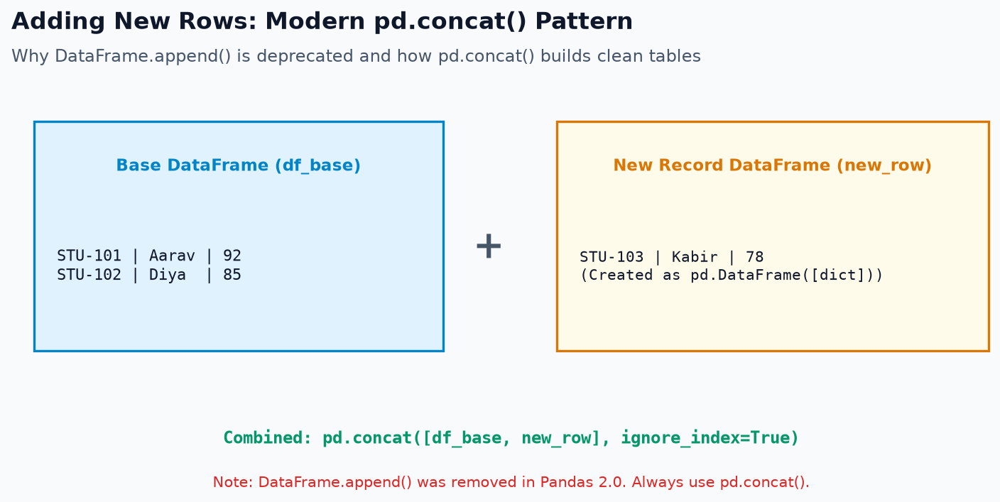
Purani tutorials aur outdated YouTube videos mein aap df.append(...) dekhenge. Pandas 1.4 mein yeh deprecate hua tha aur Pandas 2.0+ mein completely REMOVE kar diya gaya hai! Calling df.append() now raises an AttributeError. Modern Pandas mein records append karne ka standard aur highly optimized tareeqa sirf aur sirf pd.concat() hai.
The Recommended Modern Pattern
Naya record insert karne ka 3-step workflow:
- Naye record ko standard Python dictionary mein define karein:
{'name': 'Zoya', 'marks': 94}. - Use 1-row DataFrame mein convert karein:
new_df = pd.DataFrame([new_dict]). - Dono DataFrames ko concatenate karein:
df_merged = pd.concat([df, new_df], ignore_index=True).
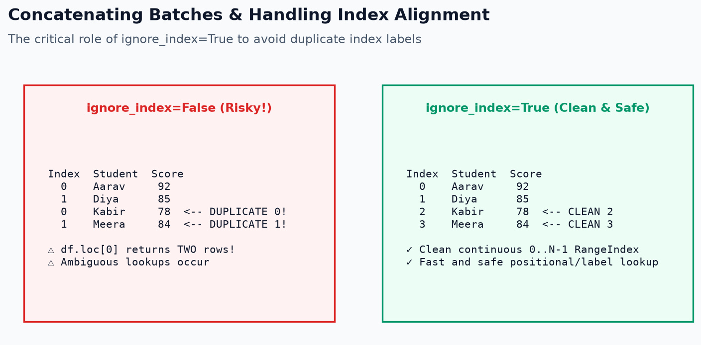
Example 1: New Student Admission Record
Semester ke mid mein ek nayi student Zoya Khan admit hoti hain:
import pandas as pd df_class = pd.DataFrame({ 'student_id': ['STU-101', 'STU-102'], 'name': ['Aarav', 'Diya'], 'marks': [92, 85] }) # Step 1 & 2: Define new student as a single-row DataFrame new_student = pd.DataFrame([{ 'student_id': 'STU-103', 'name': 'Zoya Khan', 'marks': 94 }]) # Step 3: Append using pd.concat with ignore_index=True df_class = pd.concat([df_class, new_student], ignore_index=True) print("Total Students:", len(df_class)) print(df_class)
Example 2: Adding Multiple Sales Transactions in a Batch
Ek sath multiple records ko append karna single concatenation call mein:
import pandas as pd df_existing = pd.DataFrame([ {'order_id': 'TXN-01', 'amount': 1200.0}, {'order_id': 'TXN-02', 'amount': 3500.0} ]) # Batch of 2 new orders new_orders_batch = pd.DataFrame([ {'order_id': 'TXN-03', 'amount': 850.0}, {'order_id': 'TXN-04', 'amount': 4200.0} ]) df_all_orders = pd.concat([df_existing, new_orders_batch], ignore_index=True) print(df_all_orders)
9. Removing Columns using drop(columns=...)
Feature selection aur reporting pipelines mein unwanted columns (jaise intermediate calculation flags, temporary debug columns, sensitive personal data ya high-cardinality metadata) ko delete karna padta hai.
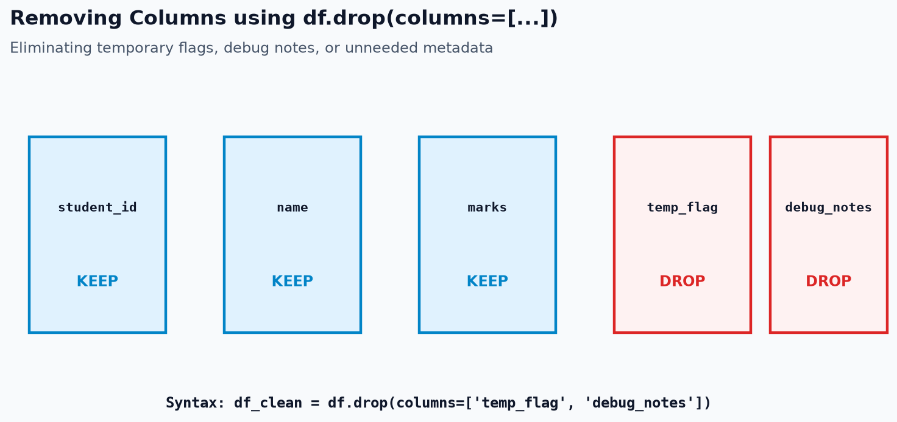
Modern Syntax: columns=[...] vs Legacy axis=1
Purane Pandas code mein aap dekhenge df.drop(['col1', 'col2'], axis=1). Modern Pandas mein columns=... keyword argument recommend kiya jata hai:
# Legacy syntax (often confuses beginners with axis=0 vs axis=1): df.drop(['temp_col'], axis=1) # Modern, explicit, highly-readable syntax: df.drop(columns=['temp_col'])
Example 1: Dropping Temporary Internal Test Columns
Student dataset se internal testing aur debug flags drop karna:
import pandas as pd df_student_full = pd.DataFrame({ 'student_id': ['STU-101', 'STU-102'], 'name': ['Aarav', 'Diya'], 'marks': [92, 85], 'temp_flag': [True, False], 'debug_notes': ['verified', 'pending'] }) # Drop both temporary columns df_clean = df_student_full.drop(columns=['temp_flag', 'debug_notes']) print("Remaining Columns:", list(df_clean.columns)) print(df_clean)
Example 2: Removing Unused E-Commerce Metadata Columns
Customer-facing invoice se warehouse internal storage racks aur vendor IDs ko drop karna:
import pandas as pd df_inventory_raw = pd.DataFrame({ 'sku': ['MON-01', 'KBD-02'], 'product': ['4K Monitor', 'Keyboard'], 'unit_price': [21999.0, 4299.0], 'warehouse_rack': ['B-14-3', 'A-02-1'], 'supplier_tax_code': ['TAX-994', 'TAX-112'] }) df_customer_view = df_inventory_raw.drop(columns=['warehouse_rack', 'supplier_tax_code']) print(df_customer_view)
10. Removing Rows using drop(index=...)
Columns drop karne ke baad, DataFrame se specific unwanted rows (jaise test dummy entries, inactive accounts, discontinued products ya outliers) ko purge karne ke liye hum drop(index=...) use karte hain.
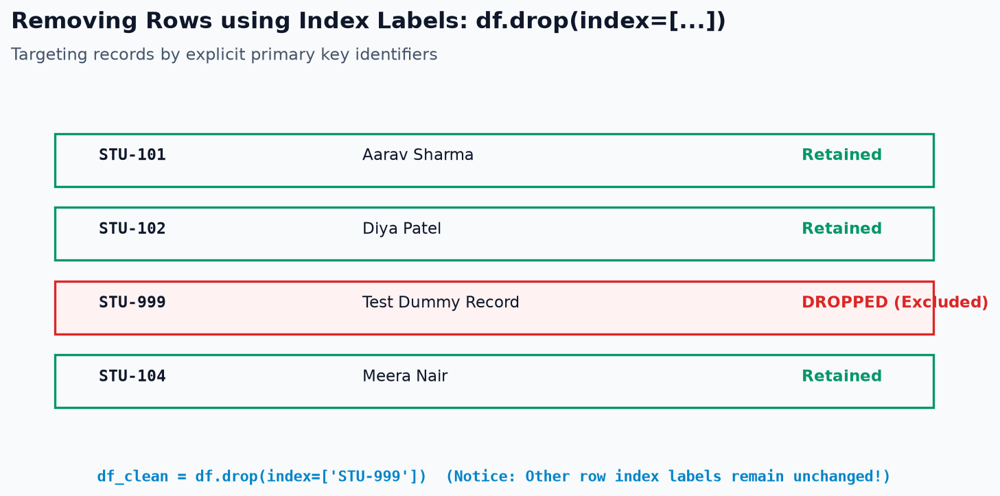
Index Labels vs Integer Positions: A Major Gotcha!
df.drop() default taur par Index Labels expect karta hai, integer row positions nahi!
Agar aapke DataFrame ka index custom strings hai (jaise 'STU-101', 'STU-102'), aur aap df.drop(0) likhenge, toh Pandas KeyError: '[0] not found in axis' throw karega, kyunki label 0 index mein exist nahi karta! Aapko hamesha exact label pass karna hota hai: df.drop(index=['STU-999']).
Index Preservation & Resetting the Index
Jab aap kisi row ko drop karte hain, toh Pandas remaining rows ke index labels ko automatically re-number nahi karta! Example ke liye, agar aapne row 2 delete ki, toh index 0, 1, 3, 4 ban jayega (gap create ho jayega).
Agar aap continuous zero-indexed RangeIndex chahte hain, toh aapko .reset_index(drop=True) call karna padta hai.
Example 1: Dropping a Test Dummy Record
College database se developer dwara daali gayi test dummy entry (STU-999) ko delete karna aur index reset karna:
import pandas as pd df_students = pd.DataFrame({ 'student_name': ['Aarav', 'Diya', 'Test Dummy', 'Meera'], 'marks': [92, 85, 0, 84] }, index=['STU-101', 'STU-102', 'STU-999', 'STU-103']) # 1. Drop test record by its index label df_cleaned = df_students.drop(index=['STU-999']) print("Remaining Index Labels:", list(df_cleaned.index)) print(df_cleaned) # 2. Reset index to clean 0..N integers df_reset = df_cleaned.reset_index(names=['student_id']) print(" After reset_index:") print(df_reset)
Example 2: Removing Obsolete Products by Index Label
E-commerce catalog se discontinued hardware products ko purge karna:
import pandas as pd df_prods = pd.DataFrame({ 'product': ['4K Monitor', 'Floppy Disk Drive', 'Wireless Mouse'], 'status': ['Active', 'Discontinued', 'Active'] }, index=['SKU-101', 'SKU-999', 'SKU-102']) # Drop using errors='ignore' so it won't crash if already deleted df_active = df_prods.drop(index=['SKU-999'], errors='ignore') print(df_active)
11. Filtering versus Removing Data
Data science interviews aur real-world projects mein ek bohot crucial concept hota hai: Filtering vs Deletion (drop). Dono dekhne mein similar results de sakte hain, lekin unka architectural purpose aur data lifecycle bilkul alag hota hai.
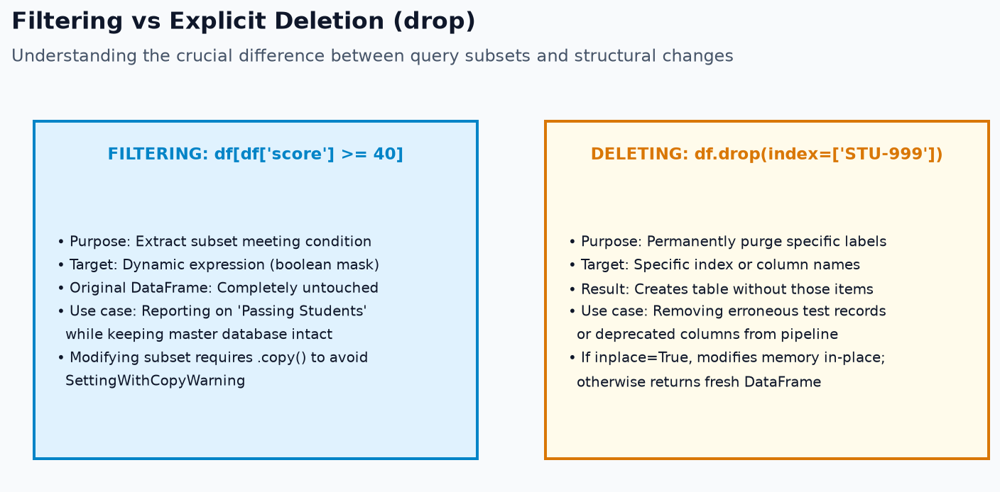
Architectural Differences
| Characteristic | Filtering (df[condition]) |
Removing / Dropping (df.drop(...)) |
|---|---|---|
| Primary Goal | Specific criteria meet karne wale records ko extract karna | Specific records/columns ko permanently discard karna |
| Master Dataset | Master dataset bilkul intact aur safe rehta hai | Resulting table se woh records gayab ho jaate hain |
| Targeting Mechanism | Dynamic Boolean expressions (e.g. marks ≥ 40) |
Explicit structural keys (index labels ya column names) |
| Downstream Assignment | Requires .copy() to prevent SettingWithCopyWarning |
Always returns a fresh independent DataFrame |
Example 1: Passed Students Report vs Master Class Data
Jab hum examination result publish karte hain, hum passing students ka filtered report banate hain. Lekin hum failing students ko master database se drop nahi karte, kyunki unhe supplementary exams dene hote hain!
import pandas as pd df_master = pd.DataFrame({ 'student': ['Aarav', 'Diya', 'Kabir', 'Meera', 'Rohan'], 'marks': [92, 85, 38, 74, 91], 'status': ['Pass', 'Pass', 'Fail', 'Pass', 'Pass'] }, index=['STU-101', 'STU-102', 'STU-103', 'STU-104', 'STU-105']) # Approach A: FILTERING (Extracts subset, master stays completely intact) df_honors = df_master[df_master['status'] == 'Pass'].copy() # Approach B: DROPPING (Explicitly purges Kabir STU-103) df_no_remedial = df_master.drop(index=['STU-103']) print("Master Table Count:", len(df_master)) print("Filtered Honors Count:", len(df_honors)) print("Dropped Table Count:", len(df_no_remedial))
12. Using assign() for Clean Method Chaining
Jab aap complex data transformation pipelines likhte hain, toh baar-baar df['new_col'] = ... likhna code ko repetitive bana deta hai aur intermediate state mutates ho jaati hai.
Pandas hume assign() method provide karta hai jo functional programming aur fluent method chaining ke liye design kiya gaya hai.
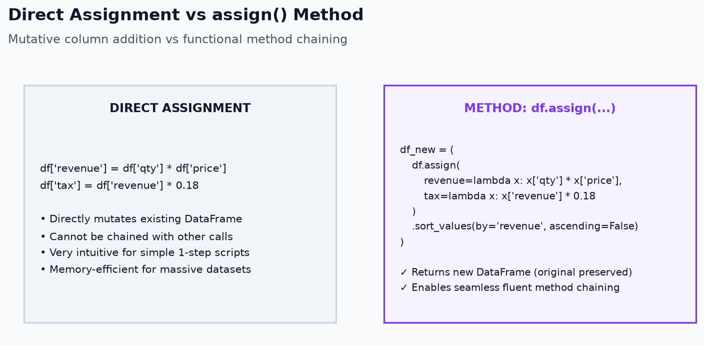
Core Benefits of assign()
- Guaranteed Immutability:
assign()kabhi bhi original DataFrame ko modify nahi karta; yeh hamesha ek fresh DataFrame return karta hai. - Multi-Column Addition in One Call: Ek hi function call ke andar multiple derived columns create kiye ja sakte hain.
- Lambda Referencing: Aap usi call ke andar newly created column ko reference karne ke liye
lambda x: ...use kar sakte hain!
Example 1: E-Commerce Multi-Stage Pricing Pipeline
Ek hi fluent pipeline ke andar gross revenue, discount amount, aur final net revenue calculate karna:
import pandas as pd df_sales = pd.DataFrame({ 'item': ['Laptop', 'Mouse', 'Monitor'], 'unit_price': [55000.0, 800.0, 22000.0], 'qty': [2, 10, 3] }) # Fluent pipeline using assign and lambdas df_pipeline = ( df_sales.assign( revenue=lambda x: x['unit_price'] * x['qty'], discount=lambda x: x['revenue'] * 0.05, net_payable=lambda x: x['revenue'] - x['discount'] ) .sort_values(by='net_payable', ascending=False) ) print(df_pipeline)
13. Common Mistakes & Chained Assignment Traps
DataFrames ko modify karte waqt beginners bohot saari aisi galtiyan karte hain jisse unka code crash hota hai ya silently galat output deta hai. Yahan top mistakes aur unke bulletproof solutions diye gaye hain.
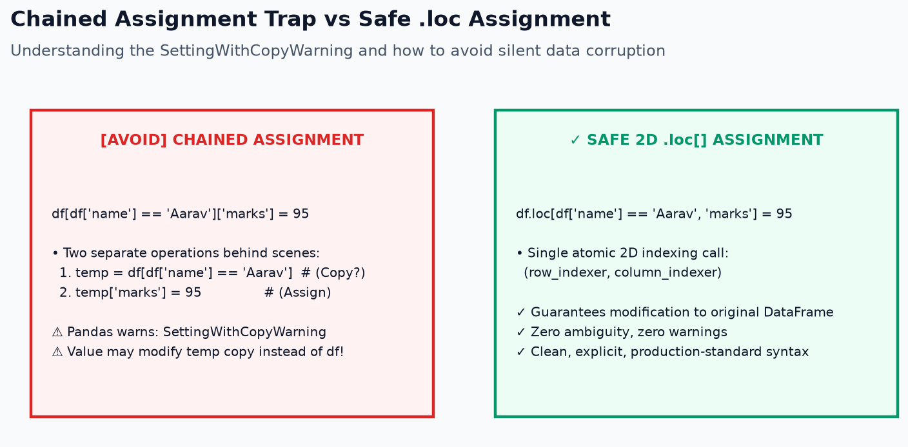
Top 10 Beginner Pitfalls in Data Modification
-
The Chained Assignment Trap:
df[df['name'] == 'Aarav']['marks'] = 95likhna. Yeh do alag operations karta hai. Pehla operation ek temporary slice/copy banata hai, aur dusra us temporary copy ko modify karta hai! Original DataFrame untouched reh sakti hai aur PandasSettingWithCopyWarningdeta hai. Solution: Hamesha atomicdf.loc[condition, 'marks'] = 95use karein! -
List Length Mismatch: 5 rows wale DataFrame mein 4 elements ki list assign karne par
ValueError: Length of values does not match length of indexaayega. -
Typo in Column Names:
df['markss'] = 90likhne par Pandas error nahi dega, balki chupke se ek naya columnmarksscreate kar dega jabki aap purane column ko update karna chahte the! -
Passing Positional Integer to drop(): Custom index wale DataFrame par
df.drop(0)likhne seKeyErroraata hai kyunkidrop()index labels dhoondta hai. -
The inplace=True Confusion:
df = df.drop('col', inplace=True)likhna! Kyunkiinplace=Truekuch bhi return nahi karta (returnsNone), aapka variabledfpermanentlyNoneban jata hai! -
DataFrame.append() Usage: Removed in Pandas 2.0+. Hamesha
pd.concat([df, new_df], ignore_index=True)use karein. -
Mismatched Column Concatenation: Naye record mein column name ka typo hone par (e.g.
'std_name'instead of'student_name'),pd.concat()columns ka union bana deta hai aur do alag columns meinNaNbhar deta hai. -
Inverted Condition Priority: Multi-tier classification mein loose condition (e.g.
≥ 50) ko strict condition (e.g.≥ 90) ke baad run karke higher values ko overwrite kar dena. -
Modifying Slices Without .copy():
passed = df[df['marks'] >= 40]ke baadpassed['bonus'] = 5likhna warning trigger karta hai. Hamesha.copy()lagayein. -
Replacing Semantically Different Values:
replace()mein bina soche samjhe{'Pending': 'Failed'}map kar dena, jabki 'Pending' ka matlab exam re-evaluation chal raha hai, fail nahi.
Debugging Walkthrough 1: Fixing Chained Assignment
import pandas as pd df = pd.DataFrame({'name': ['Aarav', 'Diya'], 'marks': [80, 85]}) # ❌ BUGGY CODE (Triggers SettingWithCopyWarning): # df[df['name'] == 'Aarav']['marks'] = 95 # ✓ BULLETPROOF PRODUCTION FIX: df.loc[df['name'] == 'Aarav', 'marks'] = 95 print(df)
Debugging Walkthrough 2: Safe Non-Existent Column Dropping
import pandas as pd df = pd.DataFrame({'id': [1, 2], 'val': [10, 20]}) # ❌ CRASHES if column does not exist: # df.drop(columns=['bonus_flag']) # Raises KeyError! # ✓ BULLETPROOF SAFE PIPELINE: df_safe = df.drop(columns=['bonus_flag'], errors='ignore') print("Safely executed without crash. Columns:", list(df_safe.columns))
14. Visual Exploration of Modified Data
DataFrames ko modify karne ke baad verification ka sabse effective tareeqa hota hai visual exploratory data analysis (EDA). Charts ke through hum instantly confirm kar sakte hain ki derived columns sahi calculate hue hain ya nahi, corrections reflect hui hain ya nahi, aur category distributions expect ke anuroop hain ya nahi.
1. Student Marks Audit: Re-evaluation Impact
Jab Meera Nair ke marks re-evaluation ke baad 74 se badhkar 86 hue, toh cohort distribution par uska kya asar pada:
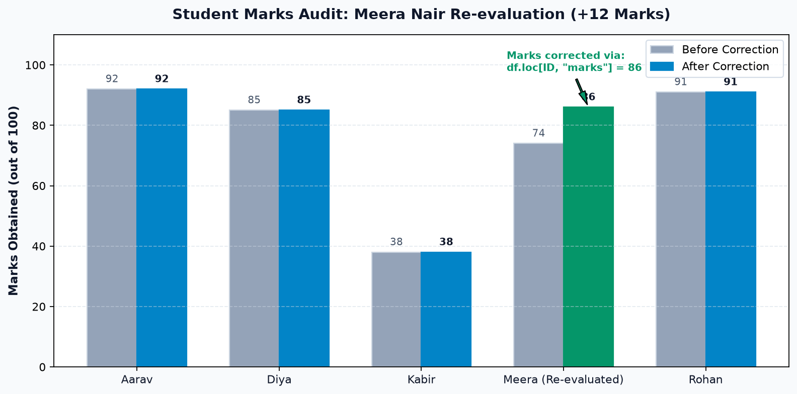
2. Academic Performance Distribution (Derived Column)
np.select() se generate ki gayi academic categories ki overall frequency distribution:
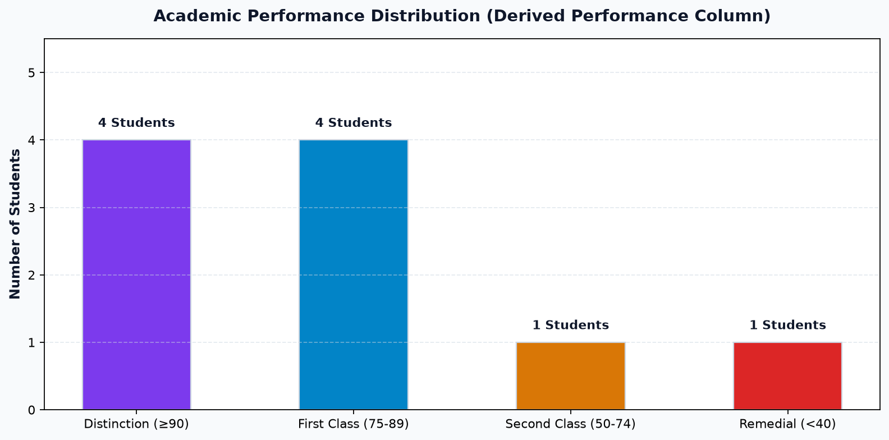
3. Potential Inventory Revenue Valuation
Derived column quantity * unit_price se nikali gayi har product ki potential revenue contribution:
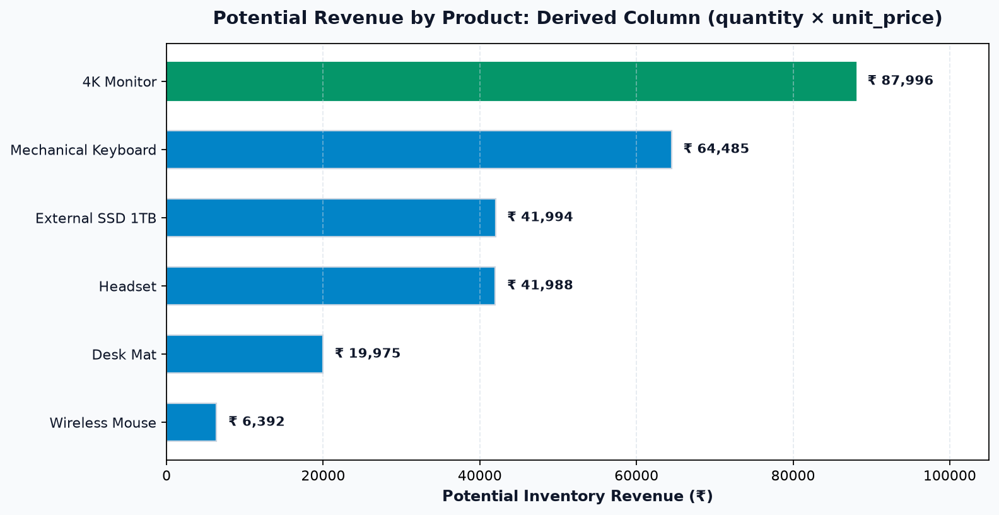
4. Inventory Levels & Re-Order Thresholds
Conditional logic (In Stock / Low Stock / Out of Stock) ko verify karne ke liye bar chart with dynamic status coloring:
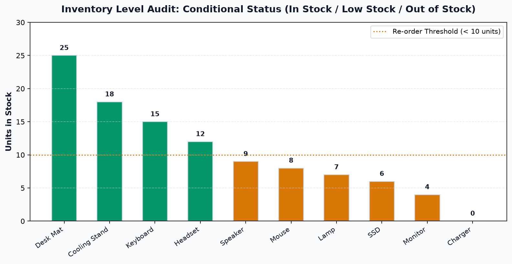
5. Financial Impact of Price Updates
Wireless Mouse ki price ₹899 se ghata kar ₹799 karne par inventory valuation par impact:
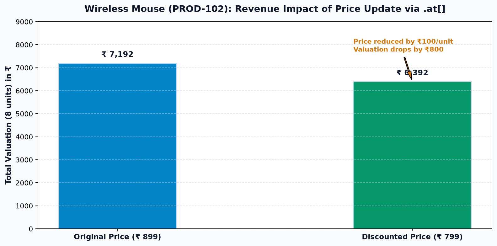
6. Before-and-After Modification Lifecycle Metrics
Overall pipeline quality metrics: Row count lifecycle aur cohort average marks improvement (+2.62%):
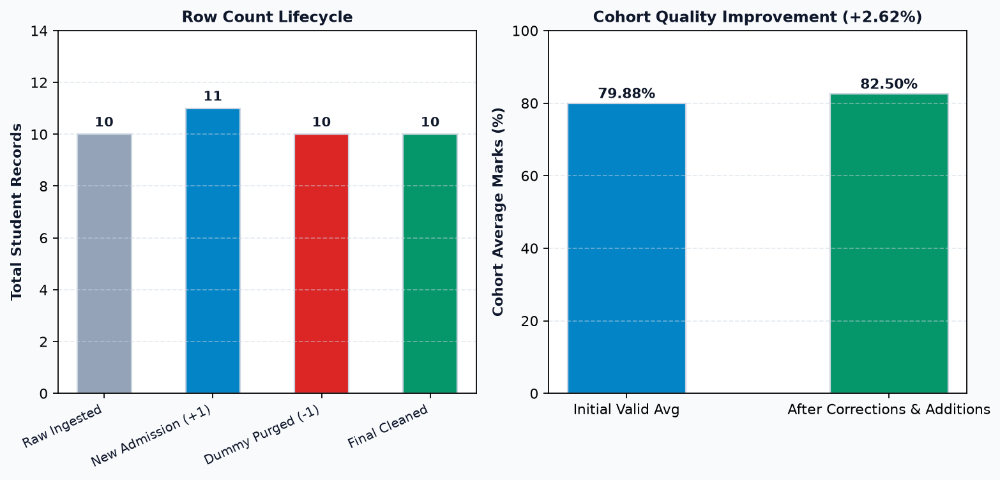
15. Real-World Mini-Project 1: College Student Record Manager
Is guided capstone mini-project mein hum University Examination Cell ke liye ek automated Student Record Manager pipeline banayenge jo raw messy student records ko ingest karegi, naye derived columns jodegi, corrections karegi, naye students admit karegi, labels standardize karegi, test records purge karegi, aur clean CSV export karke verify karegi.
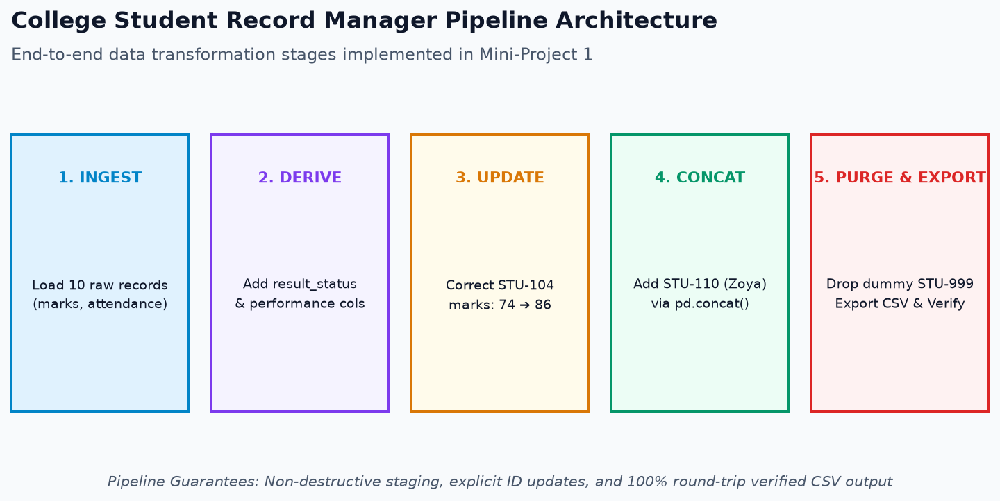
The Complete Executable 10-Step Pipeline
import os import numpy as np import pandas as pd # ============================================================================== # STEP 1: Ingest Raw Student Examination Records # ============================================================================== raw_students = { 'student_id': ['STU-101', 'STU-102', 'STU-103', 'STU-104', 'STU-105', 'STU-106', 'STU-107', 'STU-108', 'STU-109', 'STU-999'], 'student_name': ['Aarav Sharma', 'Diya Patel', 'Kabir Singh', 'Meera Nair', 'Rohan Verma', 'Sneha Kulkarni', 'Aditya Joshi', 'Pooja Reddy', 'Vikram Malhotra', 'Test Record'], 'department': ['CSE', 'IT', 'CS-AI', 'ECE', 'CSE', 'IT', 'MECH', 'ECE', 'CS-AI', 'TEMP'], 'marks': [92.0, 85.0, 38.0, 74.0, 91.0, 88.0, 72.0, 84.0, 95.0, 0.0], 'attendance': [88.0, 94.0, 82.0, 70.0, 96.0, 90.0, 76.0, 89.0, 95.0, 0.0] } df_college = pd.DataFrame(raw_students) print(f"Step 1: Loaded raw dataset with {len(df_college)} rows.") # ============================================================================== # STEP 2: Add Result Status Column (Marks >= 40 AND Attendance >= 75) # ============================================================================== pass_condition = (df_college['marks'] >= 40.0) & (df_college['attendance'] >= 75.0) df_college['result_status'] = np.where(pass_condition, 'Pass', 'Fail') # ============================================================================== # STEP 3: Calculate Performance Categories # ============================================================================== perf_conditions = [ (df_college['result_status'] == 'Pass') & (df_college['marks'] >= 90.0), (df_college['result_status'] == 'Pass') & (df_college['marks'] >= 75.0), (df_college['result_status'] == 'Pass') & (df_college['marks'] >= 50.0) ] perf_choices = ['Distinction', 'First Class', 'Second Class'] df_college['performance'] = np.select(perf_conditions, perf_choices, default='Remedial') # ============================================================================== # STEP 4: Correct Meera Nair (STU-104) Marks & Attendance # ============================================================================== df_college.loc[df_college['student_id'] == 'STU-104', 'marks'] = 86.0 df_college.loc[df_college['student_id'] == 'STU-104', 'attendance'] = 80.0 df_college.loc[df_college['student_id'] == 'STU-104', 'result_status'] = 'Pass' df_college.loc[df_college['student_id'] == 'STU-104', 'performance'] = 'First Class' # ============================================================================== # STEP 5: Add New Student Record (Zoya Khan) via pd.concat() # ============================================================================== new_student = pd.DataFrame([{ 'student_id': 'STU-110', 'student_name': 'Zoya Khan', 'department': 'CS', 'marks': 94.0, 'attendance': 92.0, 'result_status': 'Pass', 'performance': 'Distinction' }]) df_college = pd.concat([df_college, new_student], ignore_index=True) # ============================================================================== # STEP 6: Standardize Department Labels # ============================================================================== df_college['department'] = df_college['department'].replace({'CSE': 'CS', 'CS-AI': 'CS', 'TEMP': 'NA'}) # ============================================================================== # STEP 7: Remove Test Record STU-999 # ============================================================================== test_idx = df_college[df_college['student_id'] == 'STU-999'].index df_final_clean = df_college.drop(index=test_idx).reset_index(drop=True) # ============================================================================== # STEP 8 & 9: Export to CSV and 100% Round-Trip Read-Back Verification # ============================================================================== export_path = 'college_student_master_report.csv' df_final_clean.to_csv(export_path, index=False) df_verify = pd.read_csv(export_path) assert df_verify.shape == (10, 7), "Dimension mismatch!" print(f"Successfully exported {len(df_verify)} verified student records to {export_path}.") print(df_verify[['student_id', 'student_name', 'department', 'marks', 'result_status', 'performance']])
16. Real-World Mini-Project 2: E-Commerce Inventory & Sales Updater
Is second mini-project mein hum retail operations ke liye ek dynamic Catalog & Inventory Updater banayenge jo retail store ke active SKUs ko manage karegi, dynamic revenue calculate karegi, specific product discounts apply karegi, batch restock items jode gi, aur discontinued items ko clean drop karegi.
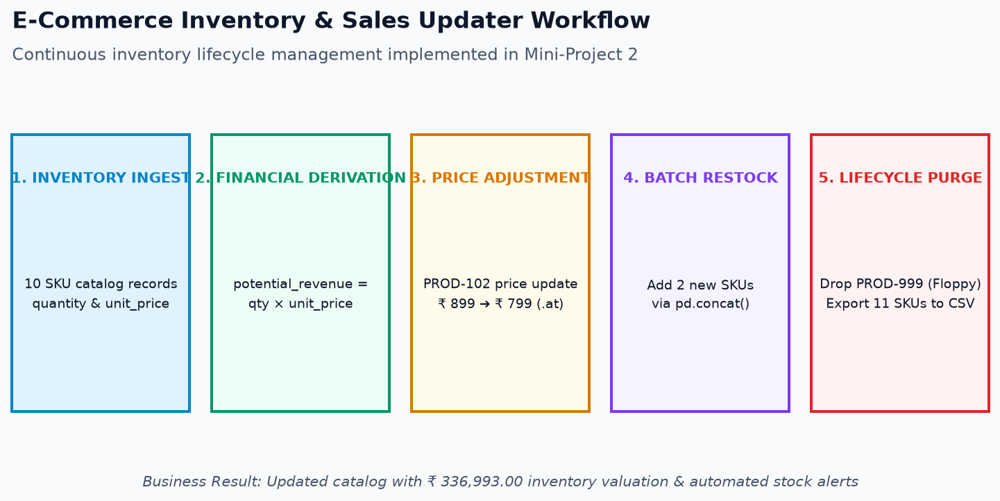
The Complete Executable 11-Step Pipeline
import numpy as np import pandas as pd # ============================================================================== # STEP 1: Ingest Raw Inventory Catalog (10 products) # ============================================================================== raw_products = { 'product_id': ['PROD-101', 'PROD-102', 'PROD-103', 'PROD-104', 'PROD-105', 'PROD-106', 'PROD-107', 'PROD-108', 'PROD-109', 'PROD-999'], 'product_name': ['Mechanical Keyboard', 'Wireless Mouse', '4K Gaming Monitor', 'Noise-Canceling Headset', 'USB-C Fast Charger', 'Ergonomic Desk Mat', 'External SSD 1TB', 'Bluetooth Speaker', 'Webcam 1080p Pro', 'Legacy Floppy Drive'], 'category': ['Accessories', 'Accessories', 'Electronics', 'Audio', 'Electronics', 'Accessories', 'Storage', 'Audio', 'Electronics', 'Obsolete'], 'quantity': [15, 8, 4, 12, 0, 25, 6, 9, 3, 0], 'unit_price': [4299.0, 899.0, 21999.0, 3499.0, 1499.0, 799.0, 6999.0, 2499.0, 4999.0, 299.0] } df_ecom = pd.DataFrame(raw_products).set_index('product_id', drop=False) # ============================================================================== # STEP 2 & 3: Update Wireless Mouse Price and Recalculate Potential Revenue # ============================================================================== df_ecom.at['PROD-102', 'unit_price'] = 799.0 df_ecom['potential_revenue'] = df_ecom['quantity'] * df_ecom['unit_price'] # ============================================================================== # STEP 4: Classify Inventory Status # ============================================================================== inv_conds = [df_ecom['quantity'] == 0, df_ecom['quantity'] < 10] df_ecom['inventory_status'] = np.select(inv_conds, ['Out of Stock', 'Low Stock'], default='In Stock') # ============================================================================== # STEP 5: Standardize Category Labels # ============================================================================== df_ecom['category'] = df_ecom['category'].replace({'Accessories': 'Peripherals', 'Obsolete': 'Discontinued'}) # ============================================================================== # STEP 6: Add 2 New Restock Inventory Items via pd.concat() # ============================================================================== restock_batch = pd.DataFrame([ {'product_id': 'PROD-110', 'product_name': 'Laptop Cooling Stand', 'category': 'Peripherals', 'quantity': 18, 'unit_price': 1299.0, 'potential_revenue': 18 * 1299.0, 'inventory_status': 'In Stock'}, {'product_id': 'PROD-111', 'product_name': 'Smart LED Desk Lamp', 'category': 'Electronics', 'quantity': 7, 'unit_price': 1899.0, 'potential_revenue': 7 * 1899.0, 'inventory_status': 'Low Stock'} ]).set_index('product_id', drop=False) df_ecom = pd.concat([df_ecom, restock_batch]) # ============================================================================== # STEP 7: Drop Discontinued Floppy Drive (PROD-999) # ============================================================================== df_ecom_final = df_ecom.drop(index=['PROD-999']).reset_index(drop=True) # ============================================================================== # STEP 8, 9 & 10: Financial Summary, CSV Export & Verification # ============================================================================== total_valuation = df_ecom_final['potential_revenue'].sum() print(f"Total Active Inventory Valuation: Rs {total_valuation:,.2f}") df_ecom_final.to_csv('ecommerce_inventory_updated_report.csv', index=False) df_readback = pd.read_csv('ecommerce_inventory_updated_report.csv') assert df_readback.shape == (11, 7), "Shape mismatch!" print(f"Successfully exported {len(df_readback)} verified products to CSV.")
17. Practice Questions, Drills & Revision
Topic 8 ke sabhi core concepts (column addition, calculations, .loc / .at, conditional logic, rename(), replace(), pd.concat(), drop(), and assign()) ko master karne ke liye neeche diye gaye 39 interactive drills solve karein:
Part A: 10 Output-Prediction Drills
Q1: What will be the output of df['bonus'] = 500 when len(df) is 4?
Output: Har row mein ek naya column bonus add ho jayega jiski value 500 hogi across all 4 rows.
Explanation: Scalar assignment pure column par broadcast hoti hai.
Q2: What happens if you assign a list of 3 items to a DataFrame with 5 rows?
Output: ValueError: Length of values (3) does not match length of index (5)
Explanation: Python lists ki length DataFrame ke exact row count ke barabar honi chahiye.
Q3: What does df.at['STU-102', 'marks'] = 90 do?
Output: Row label 'STU-102' aur column 'marks' ke intersection wale single cell ki value ko 90 kar deta hai.
Explanation: .at high-speed single scalar cell update ke liye optimized hota hai.
Q4: What is the return value of df = df.drop(columns=['col_a'], inplace=True)?
Output: df becomes None!
Explanation: inplace=True returns None. Reassigning df = df.drop(..., inplace=True) wipes out the DataFrame variable!
Q5: What happens if you call df.append({'name': 'Zoya'}, ignore_index=True) in Pandas 2.0+?
Output: AttributeError: 'DataFrame' object has no attribute 'append'
Explanation: append() was completely removed in Pandas 2.0. You must use pd.concat().
Q6: What is the remaining index after df.drop(index=['B']) on index ['A', 'B', 'C']?
Output: Index(['A', 'C'], dtype='object')
Explanation: Dropping leaves a gap and does not automatically renumber index labels.
Q7: Does df.rename(columns={'old': 'new'}) modify the values inside the cells?
Output: No.
Explanation: rename() only alters metadata (column header strings or row index identifiers).
Q8: What does df.assign(c=lambda x: x['a'] + x['b']) return?
Output: Ek naya DataFrame jisme column c shamil hoga. Original df untouched rehta hai.
Explanation: assign() is functional and strictly non-destructive.
Q9: What error occurs if you run df.drop(columns=['ghost_col']) on a DataFrame without that column?
Output: KeyError: "['ghost_col'] not found in axis"
Explanation: Pass errors='ignore' to suppress this error safely.
Q10: What does df['dept'].replace({'CSE': 'CS'}) do?
Output: 'dept' column mein jahan bhi string 'CSE' hai, use 'CS' se replace kar deta hai.
Explanation: replace() targets data cell values directly.
Part B: 10 Coding Exercises
Ex 1: Add a constant column 'academic_year' with value 2026 to df.
Solution:
df['academic_year'] = 2026
Ex 2: Calculate a new column 'bmi' from 'weight_kg' and 'height_m'.
Solution:
df['bmi'] = df['weight_kg'] / (df['height_m'] ** 2)
Ex 3: Update the marks of student 'STU-105' to 95.0 using .at accessor.
Solution:
df.at['STU-105', 'marks'] = 95.0
Ex 4: Using .loc, set 'scholarship' to True for all students with marks >= 90.
Solution:
df.loc[df['marks'] >= 90, 'scholarship'] = True
Ex 5: Rename columns 'fn' to 'first_name' and 'ln' to 'last_name'.
Solution:
df = df.rename(columns={'fn': 'first_name', 'ln': 'last_name'})
Ex 6: Standardize 'USA', 'United States', and 'U.S.' to 'US' in country column.
Solution:
df['country'] = df['country'].replace({'USA': 'US', 'United States': 'US', 'U.S.': 'US'})
Ex 7: Safely append a dictionary new_row = {'name': 'Aarav', 'score': 92} to df using pd.concat.
Solution:
df = pd.concat([df, pd.DataFrame([new_row])], ignore_index=True)
Ex 8: Drop columns 'temp_flag' and 'debug_log' from df.
Solution:
df = df.drop(columns=['temp_flag', 'debug_log'])
Ex 9: Drop row with index label 'STU-999' without raising error if missing.
Solution:
df = df.drop(index=['STU-999'], errors='ignore')
Ex 10: Use assign() to calculate 'discounted_price' as price * 0.9 in a new DataFrame.
Solution:
df_discounted = df.assign(discounted_price=lambda x: x['price'] * 0.9)
Part C: 10 Multiple-Choice Questions (MCQs)
MCQ 1: Which accessor is fastest for updating exactly one scalar cell in a DataFrame?
Options: A) .loc • B) .at • C) .iloc • D) [][ ]
Correct Answer: B) .at
Explanation: .at is tailored specifically for high-speed single scalar cell access without slicing overhead.
MCQ 2: What warning is raised when using chained assignment like df[cond]['col'] = val?
Options: A) PerformanceWarning • B) DeprecationWarning • C) SettingWithCopyWarning • D) FutureWarning
Correct Answer: C) SettingWithCopyWarning
Explanation: Pandas warns that you may be modifying an ephemeral copy rather than the original table.
MCQ 3: How was DataFrame.append() handled in Pandas 2.0?
Options: A) Kept as is • B) Made faster • C) Deprecated with warning • D) Completely removed
Correct Answer: D) Completely removed
Explanation: Due to quadratic memory copying overhead, it was removed in favor of pd.concat().
MCQ 4: What is the modern, readable syntax to delete columns?
Options: A) df.delete('col') • B) df.drop(columns=['col']) • C) df.remove('col') • D) df.pop_all()
Correct Answer: B) df.drop(columns=['col'])
MCQ 5: What happens to original index labels after dropping a row with df.drop(index=[1])?
Options: A) Re-indexed 0..N-1 automatically • B) Labels remain unchanged (gap is left) • C) Raises an IndexError • D) Table is sorted
Correct Answer: B) Labels remain unchanged (gap is left)
MCQ 6: Which method guarantees that the original DataFrame is NEVER modified?
Options: A) df['col'] = 5 • B) df.loc[0, 'c'] = 5 • C) df.assign(col=5) • D) df.at[0, 'c'] = 5
Correct Answer: C) df.assign(col=5)
MCQ 7: What does df.replace() modify?
Options: A) Column names • B) Index labels • C) Data cell values • D) DataFrame dtypes
Correct Answer: C) Data cell values
MCQ 8: When concatenating two DataFrames, what does ignore_index=True do?
Options: A) Drops duplicate columns • B) Generates a fresh continuous RangeIndex 0..N-1 • C) Keeps index labels unchanged • D) Replaces index with NaN
Correct Answer: B) Generates a fresh continuous RangeIndex 0..N-1
MCQ 9: How does np.select(conditions, choices, default=...) evaluate conditions?
Options: A) Simultaneously • B) In order of appearance, stopping at first match • C) In reverse order • D) Alphabetically
Correct Answer: B) In order of appearance, stopping at first match
MCQ 10: What parameter in drop() prevents an error when a column is not found?
Options: A) force=True • B) silent=True • C) errors='ignore' • D) missing='skip'
Correct Answer: C) errors='ignore'
Part D: 6 Debugging Challenges
Debug 1: df[df['status'] == 'Pass']['bonus'] = 500 gives SettingWithCopyWarning.
Cause: Chained assignment operates on a temporary slice.
Fix: df.loc[df['status'] == 'Pass', 'bonus'] = 500
Debug 2: df['city'] = ['Delhi', 'Mumbai'] crashes on 4-row DataFrame.
Cause: Length of list (2) does not match DataFrame rows (4).
Fix: Supply a list with exactly 4 elements or assign a scalar constant.
Debug 3: df = df.drop(columns=['temp'], inplace=True) turns df into None.
Cause: Reassigning the return value of inplace=True (which is None).
Fix: Either df.drop(columns=['temp'], inplace=True) without assignment, or df = df.drop(columns=['temp']).
Debug 4: df.drop('STU-101') raises KeyError: "['STU-101'] not found in axis".
Cause: By default in some configurations or ambiguous syntax, drop targets axis=0, but passing explicit keyword is safest.
Fix: df.drop(index=['STU-101'])
Debug 5: pd.concat([df1, df2]) creates duplicate index labels 0, 1, 0, 1.
Cause: Both DataFrames have their own default RangeIndex.
Fix: pd.concat([df1, df2], ignore_index=True)
Debug 6: Category replace fails to update 'CSE-AI' to 'CS'.
Cause: Calling df.replace() without reassignment or without column targeting.
Fix: df['dept'] = df['dept'].replace({'CSE-AI': 'CS'})
Part E: 3 Real-World Challenges
Scenario 1: Retail Restocking Automation
Problem: Create an automated pipeline that checks product inventory, marks items with quantity < 5 as 'Urgent Restock', adds ₹50 shipping surcharge to items with weight > 2kg, and drops all discontinued SKUs.
Solution Code:
df['restock_flag'] = np.where(df['qty'] < 5, 'Urgent Restock', 'Normal')
df.loc[df['weight_kg'] > 2, 'shipping_fee'] += 50
df = df.drop(index=df[df['status'] == 'Discontinued'].index).reset_index(drop=True)
Scenario 2: Grade Normalization Pipeline
Problem: University moderation committee approves giving a 5-mark moderation grace to all students in 'ECE' department whose marks are between 35 and 39 (inclusive), so they pass the 40-mark cutoff.
Solution Code:
mask = (df['dept'] == 'ECE') & (df['marks'] >= 35) & (df['marks'] <= 39)
df.loc[mask, 'marks'] += 5
df['result'] = np.where(df['marks'] >= 40, 'Pass', 'Fail')
Scenario 3: Employee Promotion & Compensation Pipeline
Problem: Using method chaining with assign(), calculate 10% annual appraisal bonus, deduct 12% provident fund (PF), calculate take-home pay, and drop intermediate HR flags.
Solution Code:
df_payroll = (
df.assign(
bonus=lambda x: x['salary'] * 0.10,
pf=lambda x: x['salary'] * 0.12,
net_take_home=lambda x: x['salary'] + x['bonus'] - x['pf']
)
.drop(columns=['hr_review_flag', 'temp_rating'])
)
Data Modification Quick-Reference Table
| Operation | Standard Syntax | Modifies In-Place? | Best Used For |
|---|---|---|---|
| Add Column | df['col'] = val |
Yes (Direct) | Adding constants, Series, or calculated arrays |
| Fluent Add | df.assign(c=lambda x: ...) |
No (Returns new df) | Functional chaining without side effects |
| Update Cell | df.at[label, 'col'] = val |
Yes (Direct) | Fastest single scalar cell update |
| Conditional Update | df.loc[cond, 'col'] = val |
Yes (Direct) | Bulk updates based on boolean masks |
| Multi-Tier Classify | np.select(conds, choices) |
No (Returns array) | Order-dependent classification tiers |
| Rename Headers | df.rename(columns={...}) |
No by default | Standardizing column names non-destructively |
| Replace Values | df['col'].replace({...}) |
No by default | Data cell standardization (CSE -> CS) |
| Append Rows | pd.concat([df, new_df]) |
No (Returns new df) | Adding single or batch records safely |
| Drop Columns | df.drop(columns=[...]) |
No by default | Purging unneeded metadata or flags |
| Drop Rows | df.drop(index=[...]) |
No by default | Removing records by explicit index label |
| Reset Index | df.reset_index(drop=True) |
No by default | Restoring continuous 0..N-1 range index |
Glossary of Key Technical Terms
- Vectorization: Executing mathematical operations across entire Series simultaneously using fast compiled C loops instead of slow Python
forloops. - Broadcasting: Automatically expanding a single scalar value across all rows of a DataFrame column.
- Chained Assignment: The dangerous antipattern
df[cond]['col'] = valwhere two separate indexing operations create an ephemeral copy, triggeringSettingWithCopyWarning. - .loc vs .at:
.locis general-purpose 2D label slicing and assignment;.atis optimized exclusively for single scalar coordinate access. - Immutability: The software design principle where functions do not alter existing data structures in memory but return fresh modified copies.
- Index Alignment: The automatic matching of data points based on row/column labels during Series arithmetic or DataFrame operations.
- Method Chaining: Calling multiple functions sequentially using dot notation (e.g.
df.assign().sort_values().head()) made possible by non-destructive operations. - Canonical Label: The standardized, official format for a categorical value (e.g. converting
'CSE-AI'to canonical'CS').
18. Summary & Topic 9 Preview
Congratulations! Aapne Pandas ka sabse critical aur practical module complete kar liya hai: Adding, Updating & Removing Data.
What You Have Mastered in Topic 8
- Adding: Vectorized column creation, broadcasting constants, Series alignment, and fluent non-destructive column derivation with
assign(). - Updating: Single-cell precision updates with
.at[], bulk masked updates with.loc[], and multi-tier cascading logic withnp.select(). - Standardizing: Renaming metadata headers with
rename()and mapping dirty data entry variations withreplace(). - Row Ingestion: Modern record insertion using
pd.concat()withignore_index=True, completely avoiding deprecatedappend(). - Pruning: Safely removing unneeded columns and obsolete rows using
drop()witherrors='ignore'and resetting index gaps. - Defensive Engineering: Eliminating
SettingWithCopyWarningand understanding the fundamental difference between transient filtering and structural deletion.
Ab jab aapka dataset clean, structured aur sanitized hai, hum agle topic mein data ko summarise karna seekhenge!
Hum master karenge: df.groupby() ka Split-Apply-Combine architecture, multiple columns grouping, multi-metric aggregations (agg(['mean', 'sum', 'count'])), transform() vs agg(), aur filtered grouping.